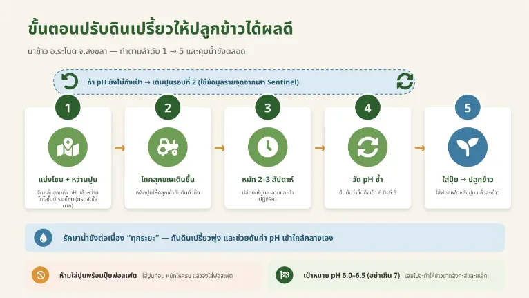
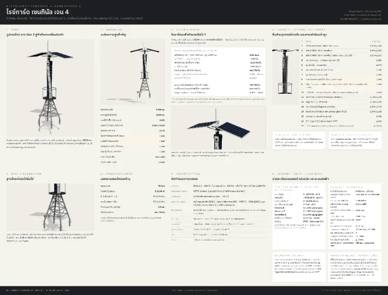

01
เรื่องราวจากภาคสนาม · The R&D Story
จากแปลงนาจริง สู่การออกแบบใหม่
From a real field to a redesign — Gen 3 → Gen 4
นี่ไม่ใช่ผลิตภัณฑ์จากห้องแล็บ ทุกการเปลี่ยนแปลงของรุ่นที่ 4 มาจากปัญหาที่พบจริงในนาข้าวสงขลา — every Gen 4 decision traces to something the field taught us.
Gen 3 · สงขลา 2569
สิ่งที่ข้อมูลบอกเรา
[เนื้อหาจริง: ปัญหาที่พบจริง — uptime 9.1%, อุปกรณ์ไฟฟ้าจมน้ำ, แบตเตอรี่หมดไฟ. รอภาพและเรื่องราวจริงจากภาคสนาม]

Gen 4 · Redesigned
ออกแบบใหม่จากหลักฐาน
[เนื้อหาจริง: ตารางเปรียบเทียบปัญหา → ทางแก้ไข. รอสรุปแบบ before/after]

[เนื้อหาจริง: ไทม์ไลน์ปัญหา→ทางแก้ · ตราสัญลักษณ์ยืนยันจากวิศวกร (PE-signed)]